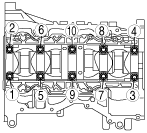

L8/LF/L3/L5 [Engine WM] ➭ ENGINE ➭ MECHANICAL ➭ CYLINDER BLOCK DISASSEMBLY (II)
CYLINDER BLOCK DISASSEMBLY (II)
id011000500700
Caution• Placing the crankshaft on a disassembly bench will cause the drive gear to contact the disassembly bench because the crankshaft drive gear is larger than the counterweight. This could result in the drive gear being scratched or damaged which could become a source of noise. Therefore, set wood blocks or similar object on the both sides of the crankshaft or place a thick clean rag under the drive gear so that the drive gear does not contact the disassembly bench directly.
• The piston, piston pin and connecting rod (semi-floating type piston pin) cannot be disassembled.
• If the piston, piston pin, and connecting rod of the full floating type piston pin are disassembled, the piston, piston pin, and snap ring must be replaced as a single unit. Therefore, inspect the following items before disassembly so as to avoid unnecessary disassembly.
― Piston diameter (See PISTON INSPECTION.)
― Piston-to-cylinder clearance (See PISTON INSPECTION.)
― Piston and connecting rod oscillation torque (See PISTON AND CONNECTING ROD INSPECTION.)
― Connecting rod large end side clearance (See CONNECTING ROD INSPECTION.)
Note• The internal parts of the cylinder block will not be available for the “TRIBUTE (L.H.D.) Face-lifted model”
(Refer to TRIBUTE Workshop Manual for identifying Face-lifted model.)
1. Disassemble in the order indicated in the table.
|
belbze00000186 |
|
1 |
Pilot bearing (If equipped) (See Pilot Bearing Disassembly Note.) |
|---|---|
|
2 |
Balancer unit (L3, L5) |
|
3 |
Connecting rod cap (See Connecting Rod Cap Disassembly Note.) |
|
4 |
Lower connecting rod bearing |
|
5 |
Connecting rod, piston component |
|
6 |
Upper connecting rod bearing |
|
7 |
Piston ring |
|
8 |
Snap ring (Full floating type piston pin) |
|
9 |
Piston pin (Full floating type piston pin) |
|
10 |
Piston (Full floating type piston pin) |
|
11 |
Connecting rod (Full floating type piston pin) |
|
12 |
Main bearing cap (See Main Bearing Cap Disassembly Note.) |
|
13 |
Lower main bearing |
|
14 |
Crankshaft |
|
15 |
Upper main bearing, thrust bearing |
|
16 |
Oil jet valve |
|
17 |
Cylinder block |
|
18 |
Adjustment shim (L3, L5) |
Pilot Bearing Disassembly Note
Note• Only remove the pilot bearing if there is a malfunction in the pilot bearing or when replacing the crankshaft.
1. Use the SST to remove the pilot bearing.
|
belbze00000053 |
Connecting Rod Cap Disassembly Note
Note• Determine the position of each removed connecting rod cap.
1. Before removing the connecting rod cap, inspect the connecting rod side clearance. (See CONNECTING ROD INSPECTION.)
2. Remove the connecting rod bolt from the connecting rod cap by tapping the bolt with a plastic hammer.
Main Bearing Cap Disassembly Note
1. Before removing the main bearing cap, inspect the crankshaft end play. (See CRANKSHAFT INSPECTION.)
2. Loosen the main bearing cap bolts in two or three steps in the order shown in the figure.
|
 belbze00000054 |